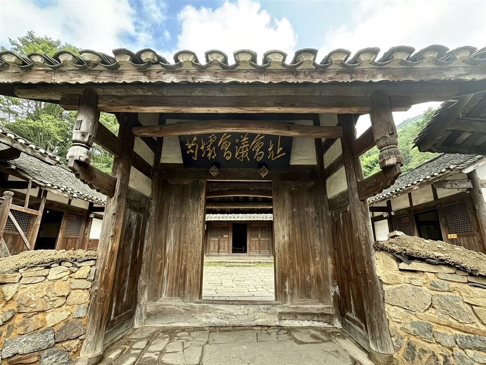
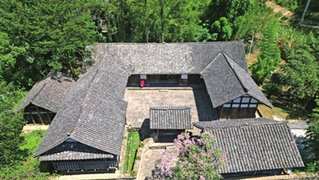

1935 年 3 月，一场会议在这间堂屋改变了红军命运。
会址是一座老式黔北农家三合院，传统木结构瓦房，坐北朝南，占地面积850平方米。走进朝门，正中是一间堂屋，堂屋正中摆放着两张方形木桌，长形木凳围在四周，两个粗瓷茶壶、十来个粗瓷碗散放在桌上，两个炭火盆静立桌下——当年那场20多人参加的会议，仿佛刚刚结束。
1935年3月10日，会议从早开到晚，多数人赞成进攻打鼓新场，只有毛泽东一人反对。当晚，毛泽东提着马灯走了近两公里，找到周恩来陈述利弊。次日会议复议，撤销进攻计划。3月12日，成立由周恩来、毛泽东、王稼祥组成的三人军事小组。
1. 走进堂屋，你看到的哪一件陈设最让你想起当年的会议场景？
2. 会议最终撤销了哪个进攻计划？